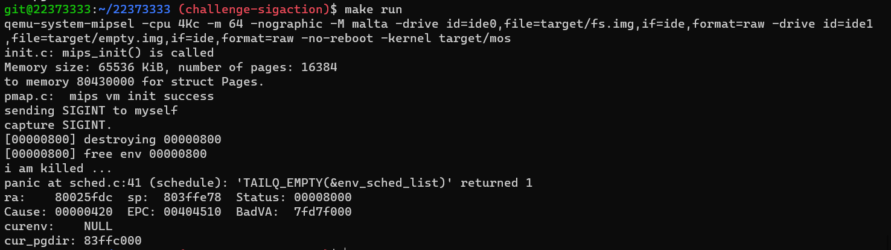

零、任务需求 参照以下两个文档在课程os代码基础上，实现支持进程间异步通讯的sigaction功能。
一、实现思路 根据文档，在从内核态转换为用户态时对进程收到的信号进行检查，若有未处理信号则对未处理信号进行处理，否则恢复异常栈帧正常执行该程序。
1. 基本数据结构与常量的定义 由于sigaction的实现同时涉及内核态和用户态，故为能使内核态代码能访问sigaction的数据结构，在include/sigset.h中对所需数据结构与常量进行定义：
1 2 3 4 5 6 7 8 9 10 11 12 13 14 15 16 17 18 19 20 21 22 23 24 25 26 27 28 29 #ifndef _SIGSET_H_ #define _SIGSET_H_ 1 #include <types.h> typedef struct sigset_t { uint32_t sig; } sigset_t ; struct sigaction { void (*sa_handler)(int ); sigset_t sa_mask; }; #define SIG_BLOCK 1 #define SIG_UNBLOCK 2 #define SIG_SETMASK 3 #define NSIG 32 #define SIGINT 2 #define SIGILL 4 #define SIGKILL 9 #define SIGSEGV 11 #define SIGCHLD 17 #define SIGSYS 31 #endif
2. 对进程控制块的修改 进程控制块需要储存收到的信号及当前信号屏蔽集、调用栈等信息，对include/env.h进行修改，添加了：
1 2 3 4 5 6 7 8 9 10 11 struct Env { ... sigset_t env_sig_blocked; sigset_t env_sig_pending; u_int env_user_sig_entry; struct sigaction env_sigactions [NSIG ]; struct sigset_t env_sig_blocked_stack [NSIG ]; int env_cur_sig_stack[NSIG]; int env_sig_top; int env_cur_sig; }
3. 信号相关函数的定义 由于sigaction是给用户提供的功能，故在user/include中添加signal.h文件，对信号相关函数进行定义：
1 2 3 4 5 6 7 8 9 10 11 12 13 14 15 16 17 18 19 20 21 #ifndef _SIGNAL_H_ #define _SIGNAL_H_ 1 #include <stdint.h> #include <types.h> #include <sigset.h> int sigaction (int signum, const struct sigaction *newact, struct sigaction *oldact) int kill (u_int envid, int sig) int sigemptyset (sigset_t *__set) int sigfillset (sigset_t *__set) int sigaddset (sigset_t *__set, int __signo) int sigdelset (sigset_t *__set, int __signo) int sigismember (const sigset_t *__set, int __signo) int sigisemptyset (const sigset_t *__set) int sigandset (sigset_t *__set, const sigset_t *__left, const sigset_t *__right) int sigorset (sigset_t *__set, const sigset_t *__left, const sigset_t *__right) int sigprocmask (int __how, const sigset_t * __set, sigset_t * __oset) int sigpending (sigset_t *__set) #endif
4. 信号处理函数的实现 在user/lib/fork.c文件末尾添加信号处理函数的实现：1 2 3 4 5 6 7 8 9 10 11 12 13 14 15 16 17 18 19 20 21 22 23 24 25 26 27 28 29 30 31 32 33 34 35 36 37 38 39 40 41 42 43 44 45 46 47 48 49 50 51 52 53 54 55 56 57 58 59 60 61 62 63 64 65 66 67 68 69 70 71 72 73 74 75 76 77 78 79 80 81 82 83 84 85 #include <types.h> #include "../include/signal.h" #include <lib.h> #include <trap.h> int sigaction (int signum, const struct sigaction *newact, struct sigaction *oldact) if (signum <= 0 || signum > NSIG) { return -1 ; } if (oldact) { *oldact = env->env_sigactions[signum - 1 ]; } if (newact && signum != SIGKILL) { try (syscall_set_sigaction(0 , signum, newact)); } return 0 ; } int kill (u_int envid, int sig) return syscall_sig_kill(envid, sig); } int sigprocmask (int __how, const sigset_t * __set, sigset_t * __oset) if (__oset) { *__oset = env->env_sig_blocked; } if (__how != SIG_BLOCK && __how != SIG_UNBLOCK && __how != SIG_SETMASK) { user_panic("Unknown '__how' type" ); } return syscall_sigprocmask(__how, __set, __oset); } int sigemptyset (sigset_t *__set) __set->sig = 0 ; return 0 ; } int sigfillset (sigset_t *__set) __set->sig = 0xffffffff ; return 0 ; } int sigaddset (sigset_t *__set, int __signo) if (__signo <= 0 || __signo > NSIG) { return -1 ; } __set->sig |= 1 << (__signo - 1 ); return 0 ; } int sigdelset (sigset_t *__set, int __signo) if (__signo <= 0 || __signo > NSIG) { return -1 ; } __set->sig &= ~(1 << (__signo - 1 )); return 0 ; } int sigismember (const sigset_t *__set, int __signo) if (__signo <= 0 || __signo > NSIG) { return -1 ; } return (__set->sig & (1 << (__signo - 1 ))) > 0 ; } int sigisemptyset (const sigset_t *__set) return __set->sig == 0 ; } int sigandset (sigset_t *__set, const sigset_t *__left, const sigset_t *__right) __set->sig = __left->sig & __right->sig; return 0 ; } int sigorset (sigset_t *__set, const sigset_t *__left, const sigset_t *__right) __set->sig = __left->sig | __right->sig; return 0 ; } int sigpending (sigset_t *__set) *__set = env->env_sig_pending; return 0 ; }
其中前三个函数sigaction，kill，sigprocmask需要修改进程信息，故需要进行系统调用，其系统调用实现于kern/syscallall.c如下：
在kill函数中，只需要把信号加入对应进程的待处理信号队列即可
在sigprocmask中，需要根据__how的值对本进程的信息进行修改
在sigaction中，需要修改本进程的信号对应处理方法
1 2 3 4 5 6 7 8 9 10 11 12 13 14 15 16 17 18 19 20 21 22 23 24 25 26 27 28 29 30 31 32 33 int sys_kill (u_int envid, int sig) struct Env *e ; if (envid2env(envid, &e, 0 ) < 0 ) { return -1 ; } if (sig <= 0 || sig > NSIG) { return -1 ; } e->env_sig_pending.sig |= 1u << (sig - 1 ); return 0 ; } int sys_sigprocmask (int __how, const sigset_t * __set) if (__set == NULL ) return 0 ; if (__how == SIG_BLOCK) { curenv->env_sig_blocked.sig |= __set->sig; } else if (__how == SIG_UNBLOCK) { curenv->env_sig_blocked.sig &= ~__set->sig; } else if (__how == SIG_SETMASK) { curenv->env_sig_blocked.sig = __set->sig; } return 0 ; } int sys_set_sigaction (u_int envid, int signum, struct sigaction *newact) struct Env *e ; if (envid2env(envid, &e, 0 ) < 0 ) { return -1 ; } e->env_sigactions[signum - 1 ] = *newact; return 0 ; }
5. 异步信号处理机制的实现 需要在内核态转变为用户态时对待处理信号进行判断，故在内核态返回用户态的最后进入处理信号判断函数，修改kern/genex.S文件中的ret_from_exception：
1 2 3 4 5 6 7 8 9 10 FEXPORT(ret_from_exception) // for sigaction move a0, sp addiu sp, sp, -8 jal do_signal nop addiu sp, sp, 8 // sigaction end RESTORE_ALL eret
并于kern/tlbex.c中实现处理信号判断函数do_signal：
首先根据进程控制块的待处理信号集与屏蔽信号集取出目标待处理信号
后将当前异常栈帧信息与处理信号信息压入信号处理栈
后在异常处理栈上储存用户信号处理函数需要的参数
后将栈帧对应寄存器设置好，结束处理
1 2 3 4 5 6 7 8 9 10 11 12 13 14 15 16 17 18 19 20 21 22 23 24 25 26 27 28 29 30 31 32 33 34 35 36 37 38 39 40 41 void do_signal (struct Trapframe *tf) u_int signum; if (curenv->env_sig_pending.sig & (1 << (SIGKILL - 1 ))) { signum = SIGKILL; curenv->env_sig_pending.sig = 1 << (SIGKILL - 1 ); } else { u_int sigs = curenv->env_sig_pending.sig & ~(curenv->env_sig_blocked.sig); if (sigs == 0 ) return ; signum = __builtin_ctz(sigs) + 1 ; } curenv->env_sig_pending.sig ^= 1u << (signum - 1 ); curenv->env_sig_blocked_stack[curenv->env_sig_top] = curenv->env_sig_blocked; curenv->env_cur_sig_stack[curenv->env_sig_top] = curenv->env_cur_sig; curenv->env_sig_top++; curenv->env_cur_sig = signum; curenv->env_sig_blocked.sig |= curenv->env_sigactions[signum - 1 ].sa_mask.sig | (1 << (signum - 1 )); struct Trapframe tmp_tf = if (tf->regs[29 ] < USTACKTOP || tf->regs[29 ] >= UXSTACKTOP) { tf->regs[29 ] = UXSTACKTOP; } tf->regs[29 ] -= sizeof (struct Trapframe); *(struct Trapframe *)tf->regs[29 ] = tmp_tf; if (curenv->env_user_sig_entry) { tf->regs[4 ] = tf->regs[29 ]; tf->regs[5 ] = signum; tf->regs[6 ] = curenv->env_sigactions[signum - 1 ].sa_handler; tf->regs[29 ] -= sizeof (tf->regs[4 ]); tf->regs[29 ] -= sizeof (tf->regs[5 ]); tf->regs[29 ] -= sizeof (tf->regs[6 ]); tf->cp0_epc = curenv->env_user_sig_entry; } else { panic("signal but no user handler registered" ); } }
用户态信号处理函数定义在user/lib/libos.c中，其处理流程如下：
根据传入func判断本进程是否设置对应信号处理函数，若有则调用
若无则根据信号进行默认处理
当信号为SIGKILL时强制进程退出
1 2 3 4 5 6 7 8 9 10 11 12 13 14 15 static void __attribute__((noreturn)) sig_entry(struct Trapframe *tf, int signum, void (*func)(int )) { if (func && signum != SIGKILL) { func(signum); } else { switch (signum) { case SIGINT: case SIGILL: case SIGKILL: case SIGSEGV: exit (); default : tf->cp0_epc += 4 ; } } int r = syscall_sig_set_trapframe(0 , tf); user_panic("sig_entry syscall_sig_set_trapframe returned %d" , r); }
在sig_entry函数最后进行系统调用返回原处理流，其具体实现在kern/syscall_all.c中：
其与普通set_trapframe的差别在于添加了对信号处理栈的出栈操作，以恢复信号处理前的状态
1 2 3 4 5 6 7 8 9 10 11 12 13 14 15 16 17 18 19 20 21 int sys_sig_set_trapframe (u_int envid, struct Trapframe *tf) if (is_illegal_va_range((u_long)tf, sizeof *tf)) { return -E_INVAL; } struct Env *env ; try (envid2env(envid, &env, 1 )); if (env->env_sig_top > 0 ) { env->env_sig_top--; env->env_sig_blocked = env->env_sig_blocked_stack[env->env_sig_top]; env->env_cur_sig = env->env_cur_sig_stack[env->env_sig_top]; } if (env == curenv) { *((struct Trapframe *)KSTACKTOP - 1 ) = *tf; return tf->regs[2 ]; } else { env->env_tf = *tf; return 0 ; } }
同时，需要注意的是，为了避免重复进入do_signal函数，在处理信号的过程中，除了最后的返回原处理流之外，不能进行任何系统调用，否则将存在重入，导致程序功能异常。
6. 用户信号处理函数的设置 Env控制块中的用户信号处理函数env_user_sig_entry初值为空，故需要对其进行设置。选择在user/lib/libos.c进入main之前对其进行设置：
1 2 3 4 5 6 7 8 9 10 11 12 void libmain (int argc, char **argv) env = &envs[ENVX(syscall_getenvid())]; try (syscall_set_sig_entry(0 , sig_entry)); main(argc, argv); exit (); }
7. 进程复制(fork)的支持 在复制进程的时候需要将进程的信号处理相关参数一并复制给子进程，故修改kern/syscall_all.c中的sys_exofork函数，添加相关内容：
1 2 3 4 5 6 7 8 9 10 11 12 13 14 int sys_exofork (void ) ... e->env_user_sig_entry = curenv->env_user_sig_entry; e->env_sig_blocked = curenv->env_sig_blocked; e->env_sig_pending = curenv->env_sig_pending; e->env_sig_top = curenv->env_sig_top; e->env_cur_sig = curenv->env_cur_sig; for (int i = 0 ; i < NSIG; i++) { e->env_sigactions[i] = curenv->env_sigactions[i]; e->env_sig_blocked_stack[i] = curenv->env_sig_blocked_stack[i]; e->env_cur_sig_stack[i] = curenv->env_cur_sig_stack[i]; } ... }
8. 部分系统信号的产生 对于SIGSEGV信号，在passive_alloc中产生：
1 2 3 4 5 6 7 8 static void passive_alloc (u_int va, Pde *pgdir, u_int asid) ... if (va < UTEMP) { sys_kill(curenv->env_id, SIGSEGV); } ... }
对于SIGILL信号，在do_reserved中产生：
1 2 3 4 5 6 7 8 void do_reserved (struct Trapframe *tf) if (((tf->cp0_cause >> 2 ) & 0x1f ) == 10 ) { sys_kill(curenv->env_id, SIGILL); } else { print_tf(tf); panic("Unknown ExcCode %2d" , (tf->cp0_cause >> 2 ) & 0x1f ); } }
对于SIGCHLD信号，在sys_env_destroy中产生：
1 2 3 4 5 6 int sys_env_destroy (u_int envid) ... sys_kill(e->env_parent_id, SIGCHLD); env_destroy(e); ... }
对于SIGSYS信号，在do_syscall中产生：
1 2 3 4 5 6 7 8 9 void do_syscall (struct Trapframe *tf) ... if (sysno < 0 || sysno >= MAX_SYSNO) { sys_kill(curenv->env_id, SIGSYS); tf->regs[2 ] = -E_NO_SYS; return ; } ... }
二、测试 测试代码如下：
1 2 3 4 5 6 7 8 9 10 11 12 13 14 15 16 17 18 #include <lib.h> void sigint_handler (int sig) debugf("capture SIGINT.\n" ); exit (); } int main () struct sigaction sa ; sa.sa_handler = sigint_handler; sigemptyset(&sa.sa_mask); sigaction(SIGINT, &sa, NULL ); debugf("sending SIGINT to myself\n" ); kill(0 ,SIGINT); debugf("If you see this on your screen, it means that the signal is not handled correctly.\n" ); while (1 ); return 0 ; }
执行结果如下：

可以看到，程序可以正常执行。
If you like this blog or find it useful for you, you are welcome to comment on it. You are also welcome to share this blog, so that more people can participate in it. If the images used in the blog infringe your copyright, please contact the author to delete them. Thank you !